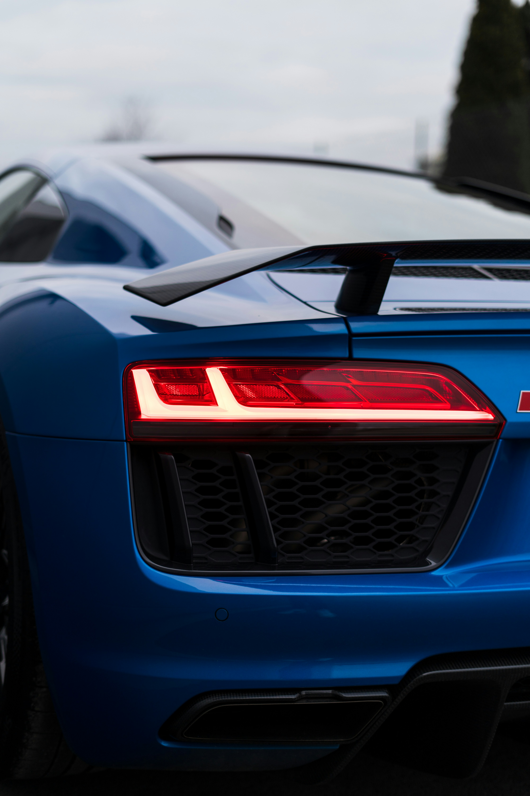
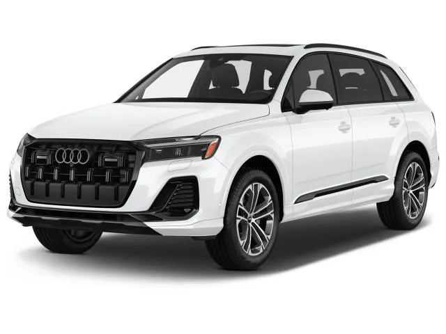

سيارة SUV فاخرة كبيرة بسبعة مقاعد، تجمع بين الرحابة والأداء وتقنيات quattro.

| المحرك | 3.0 لتر V6 تيربو + نظام هجين خفيف |
| عدد الأسطوانات | 6 |
| القوة | 340 حصان |
| عزم الدوران | 500 نيوتن متر |
| ناقل الحركة | 8 سرعات Tiptronic |
| نظام الدفع | quattro رباعي |
| التسارع (0-100) | 5.6 ثانية |
| السرعة القصوى | 250 كم/س |
| عدد المقاعد | 7 |
| نوع الوقود | بنزين |